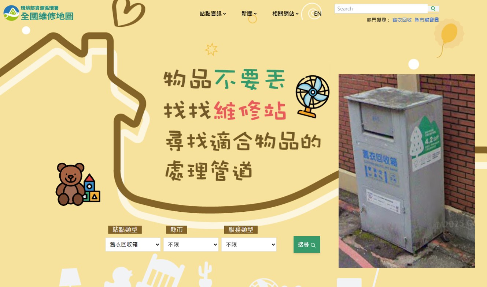
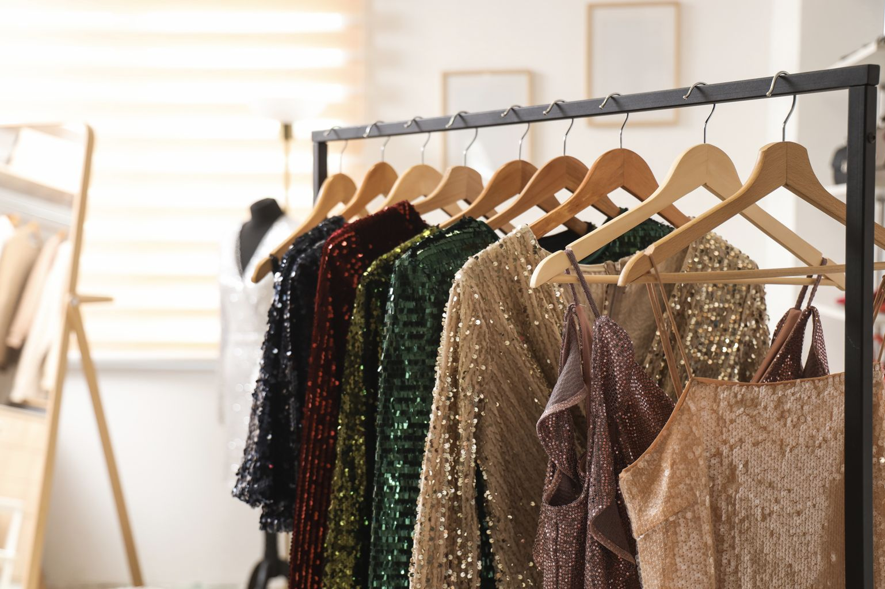
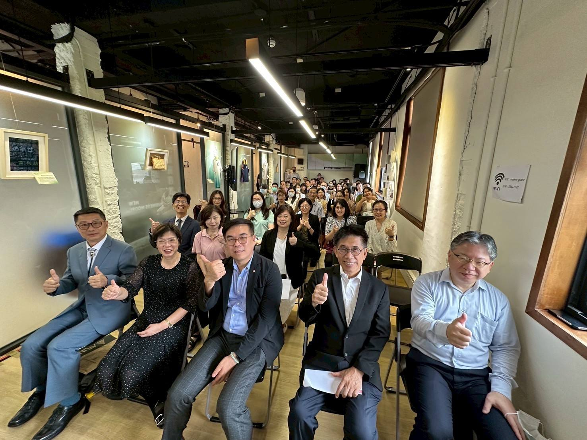
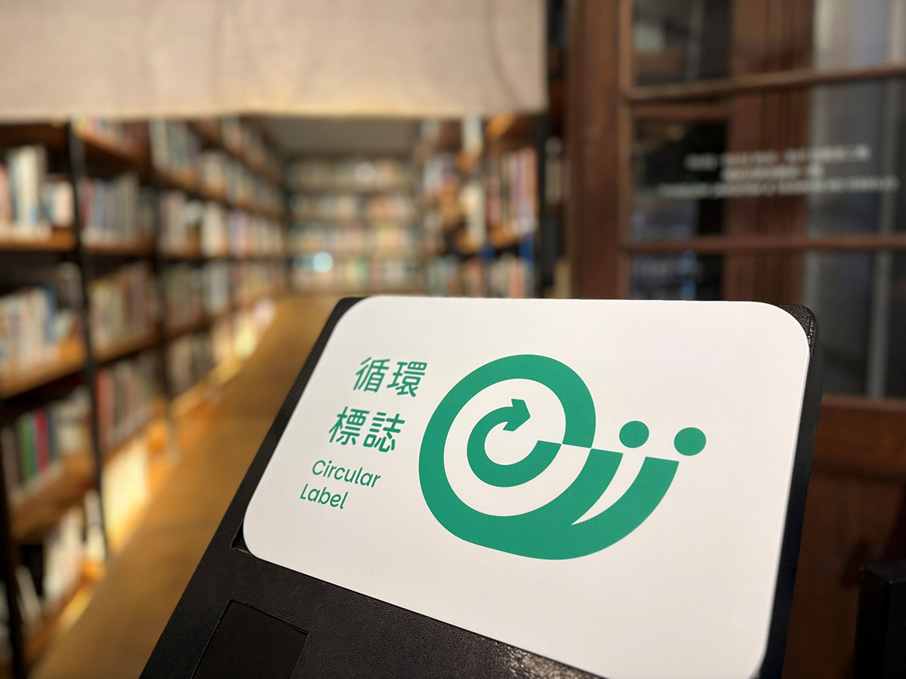
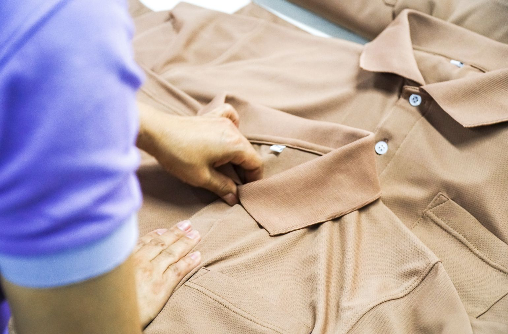

舊衣一年8.2萬公噸爆量！循環標誌上路，台灣拚「衣到衣」新循環
◎ 報導／黎育如
◎ 圖片來源／環境部資源循環署・達志影像Shutterstock
◎ 發布日期／2026.07.10
◎ 更新日期／2026.08.20

◎ 報導／黎育如
◎ 圖片來源／環境部資源循環署・達志影像Shutterstock
◎ 發布日期／2026.07.10
◎ 更新日期／2026.08.20
台灣紡織業正從「寶特瓶變衣服」邁向更具挑戰性的「衣到衣」封閉循環。資源循環署成立紡織循環大聯盟、推動「循環標誌」，從設計源頭減少混紡、改用單一材質，突破回收量能吃緊的舊衣困境，力拚接軌國際市場。
世足賽今年7月舉辦，在國家隊榮耀、運動員汗水與球迷目光之中，一件「球衣」承載更深遠的意義，它說明了台灣紡織業正在改寫的另一場比賽。
近年國際運動品牌陸續把再生材料導入賽事球衣，而台灣紡織供應鏈也不只是站在代工與製造的位置。新光合纖的T2T環保纖維切入Nike國家隊球衣供應鏈，讓廢棄衣物、生產邊角料與舊紡織品，有機會透過回收再生技術，重新成為高品質運動服飾的原料。
這也揭開了台灣紡織循環的一個關鍵轉向，從過去大家熟悉的「寶特瓶變衣服」，走向更困難、也更接近真正閉環的「衣服再變衣服」。
當一件衣服穿舊、被淘汰後，它真的能重新回到紡織供應鏈嗎？還是最後仍只能被降級使用，甚至走向焚化或掩埋？這正是資源循環署近年推動紡織循環時，想要處理的難題。
過去台灣的舊衣回收，多半和社福體系緊密相連。民眾把衣服投入舊衣回收箱，希望它們能被好好利用，繼續被需要的人穿上。這樣的模式曾經撐起舊衣流通的重要管道，但隨著衣物消費速度愈來愈快，系統也逐漸承受壓力。

▲ 政府建置「全國維修地圖」，截至115年6月已彙整全台7,291座舊衣回收箱站點資訊，提供民眾查詢周邊回收管道，提升舊衣回收便利性及整體回收效益。（圖片來源／環境部資源循環署）
「現在是供過於求，大家買越來越多衣服，汰換速度真的太快。」環境部資源循環署永續消費回收組回收促進科科長吳筱婷觀察，許多舊衣其實已經污損到無法再穿，二手市場也不如過去寬廣。她指出，目前舊衣中能再變賣的比例大約三到四成，且隨著各國經濟發展，願意承接二手衣的市場也逐漸萎縮。
如果地區的回收業者沒有額外分出舊衣，許多衣物最後仍可能走回一般垃圾處理管道。舊衣回收爆量、二手去化變難，讓台灣必須重新思考，這些不能再穿的衣服，能不能不只被處理掉，而是被抽紗再製，成為新的再生纖維？
為了讓這件事不只停留在單一案例，資源循環署成立紡織循環大聯盟，試圖把原本斷鏈重新接起來。聯盟串接回收端、紡織纖維與再生纖維業者、品牌通路、學研與設計端，目標不是只做舊衣回收，而是推動真正的「產品閉鎖循環」。
吳筱婷說，國際趨勢已經從回收寶特瓶抽紗，進一步走向「衣服做成衣服」。廢舊衣物若能被正確分選，轉化為再生纖維，就可以重新織成布料，應用在衣服、窗簾、寢具等紡織品上。
但是一切的關鍵在於，回收的量要提高、再生纖維的量也要提高，品質更要穩定，紗線廠才願意使用這些原料。因此，資源循環署也透過公共建設計畫，爭取打造「全循環回收工廠」。期待未來舊衣回收後，工廠可自動辨識材質，將單一、純度高的布料挑選出來，再做成纖維原材料，供應紗線廠重新製成紗線。
這也是紡織循環和一般回收不同的地方。塑膠瓶相對材質單純，但衣服常常混合不同材質，同時又有塗層、印花、鈕釦與拉鍊等。只要材質愈複雜，後端分選、拆解與再製成本就愈高。吳筱婷指出，最理想的狀態仍是「單一材質回到單一材質」，例如布料與縫線都是聚酯纖維，或整件衣服都是純棉，後端回收才會更順暢，也能減少處理過程中的耗能與碳排。

▲ 現在衣服多造型，多屬混紡材質。（圖片來源／達志影像Shutterstock）
這也讓「循環設計」成為政策推動的另一個重點。資源循環署不只串聯業者，也接觸設計教育端，例如與實踐大學設計系交流，希望學生從設計階段就理解，一件衣服未來能不能回收，往往從最初選材時就已經決定。少混紡、用單一材質、減少複雜配件，並不是設計退讓，而是讓產品未來有機會無痛回收。
但現實中，混紡衣物仍占大宗。對於難以回到衣到衣循環的混紡材料，署方也思考跨領域去化，例如作為填充材、支撐材，應用在不直接接觸皮膚的產品內層。透過適當消毒與處理，混紡舊衣仍可能取代部分棉花或填充材料，而不是直接成為廢棄物。
同時，資源循環署也透過創新補助計畫，協助業者研發技術、試運轉機台，並媒合回收商作為實際場域。

▲ 資源循環署113年串連產官學研成立「紡織循環聯盟」，截至115年6月已有97家成員加入聯盟。共同推動我國紡織品資源循環。（圖片來源／環境部資源循環署）
在制度面上，2026年出現了新進展。資源循環署推動「循環標誌」，紡織品被列為第一類推動項目。與門檻較高、檢視製程更全面的環保標章不同，循環標誌的定位是「普及」，希望讓採購端和消費者有更多可辨識的選擇。
吳筱婷說，目前循環紡織品的再生纖維比例門檻先從5%開始。這個比例看似不高，但政策邏輯是先讓市場動起來。「如果民眾或採購端願意先買這樣的循環紡織品，就有助於促進整個循環體系建立。」她說，當前端有人願意買，整體產業才會更願意收舊衣、製成紗線。
循環標誌也想突破坊間永續宣稱的盲點。現在許多快時尚品牌會在吊牌上標示「含多少再生料」，但這往往只是業者自我宣稱。吳筱婷表示，國內循環標誌會要求業者提出再生料比例證明、進貨數量等文件，經環境部審認後才核發標誌。

▲ 最新上路的「綠色蝸牛」循環標誌，若產品只要符合使用天然或再生料、成分單一、好拆解好回收，就能獲得認證。（圖片來源／環境部資源循環署）
再生比例門檻也可能隨市場成熟逐步提高。吳筱婷指出，若未來循環產品更普及，再生纖維比例可以滾動提升到 10%、15%。但若一開始要求太高，成本可能立即反映在售價上，反而不利普及。
綠色採購則是另一個讓系統跑起來的示範場域。吳筱婷舉例，桃園機場公司的工作服已採購單一材質服飾，實穿後並未因循環設計而犧牲舒適度。由於工作服汰換率較高，只要前端做到單一材質，供應商就能協助回收，再串接再生紗線廠，形成較接近封閉循環的模式。
如果公私部門在活動背心、制服、工作服上優先選擇循環紡織品，後端回收商會更容易處理，紗線廠也能取得品質穩定的原料，整個循環才可能越做越大。

▲ 從制服開始運用衣服到衣服的循環系統，是現在台灣發展的趨勢。（圖片來源／達志影像Shutterstock）
面對國際趨勢，台灣也並非從零開始。吳筱婷指出，雖然許多成衣與布料製造已外移海外，但台灣仍保有再生纖維上游研發與測試量能。
「全球紡織技術最尖端的研發都在台灣。」她說，國際品牌常找台灣做舊衣回收再生的研發測試，因為台灣工廠合法合規，也經得起第三方驗證，包括全球回收標準GRS等查核。
未來，「數位產品護照」也會是另一個需要補上的能力。資源循環署目前透過科技計畫，思考如何建立資訊系統，讓業者登載產品資料，或與企業既有系統串接。這些資料未來若能對接歐盟要求，將讓台灣紡織供應鏈更容易接軌國際市場。
然而，循環紡織並不只能依靠政府和企業。對民眾來說，最直接的行動仍是減少衝動購買、延長衣物使用，並讓舊衣進入正確管道。
若衣服還能穿，可以透過舊衣回收箱、社福機構、百貨或運動通路的二手衣回收活動，讓衣物有機會被再次使用。若未來循環標誌產品逐漸增加，消費者也可以優先選擇具備循環設計或再生纖維的產品。
一件世界盃球衣證明，台灣有能力把舊紡織品重新變成高品質材料。但要讓更多衣服都能回到衣服，不能只靠單一技術突破。
真正的循環，需要設計端少一點混紡，回收端多一點分選能力，採購端多一點穩定需求，也需要消費者開始理解，永續不是把舊衣丟出去就結束，而是在買下衣服的那一刻，就想像它未來能不能被好好留下來。


新聞部
副總經理 王結玲
陳致中・陳詩璧・胡瑞麒・華子琛・談雍雍・吳家瑜
節目部
T觀點／莊開文・吳家瑋・莊秀惠・趙昱涵
數位事業部
總監 郭瀧億
內容策展組／廖玉貞・彭嘉儀・林佳瑤・李佳綺
ESG永續發展部
賴盈文・蔣成偉・張玲玲・黎育如・徐新瑜

© TVBS Media Inc. All Rights Reserved｜聯利媒體股份有限公司